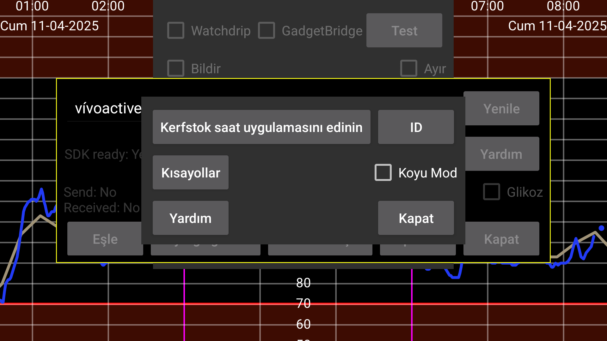

ar be de es fr hi it ja ko nl pl pt ru tr uk uz zh en
Kerfstok'un kaynağı şu adresten indirilebilir: https://www.juggluco.nl/Kerfstok/Kerfstok-source.html) Kullanıcılar bunu değiştirmekte özgürdür. Her saat uygulamasının benzersiz bir tanımlayıcısı vardır. Tanımlayıcı varsayılandan farklıysa, Juggluco'nun saat uygulamasıyla iletişim kurmak için bunu bilmesi gerekir. Farklı bir tanımlayıcı belirtmek için ID tuşuna basın ve 32 karakterlik dizeyi yazın. Bir cihazdaki Juggluco, yalnızca bir saat uygulamasına bağlanabilir. Değişiklikler veri kaybına yol açacaktır.
Belirli değerleri kolayca girebilmek için Garmin saat uygulaması Kerfstok'a kısayollar gönderilir.
Kerfstok'un siyah üzerine beyaz yerine beyaz üzerine siyah olması gerekip gerekmediğini seçin.